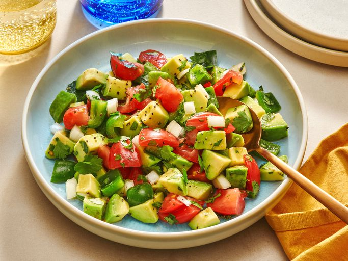

Avocado Salad

Description
This avocado salad is a delicious combination of creamy avocados, sweet and juicy tomatoes, bell pepper, cilantro, and fresh lime juice for an easy summer salad full of bold, fresh flavor and color.
Avocado Salad Ingredients
There are the simple, fresh ingredients you'll need to make this easy avocado salad recipe:
- 2 ripe avocados - peeled, pitted and diced
- 1 sweet onion, chopped
- 1 green bell pepper, chopped
- 1 large ripe tomato, chopped
- 1/4 cup chopped fresh cilantro
- 1/2 lime, juiced
- Salt and pepper to taste
Preparation Steps
- Avocados: This recipe starts with two peeled, pitted, and diced avocados;
- Onion: A chopped sweet onion lends a bold flavor;
- Bell pepper: A chopped green bell pepper gives the salad a welcome crunch;
- Tomato: A chopped ripe tomato adds even more color and flavor;
- Cilantro: Chopped cilantro takes the flavor up a notch;
- Lime: Fresh lime juice adds brightness and prevents browning; and
- Seasonings: Simply season the avocado salad with just salt and pepper.